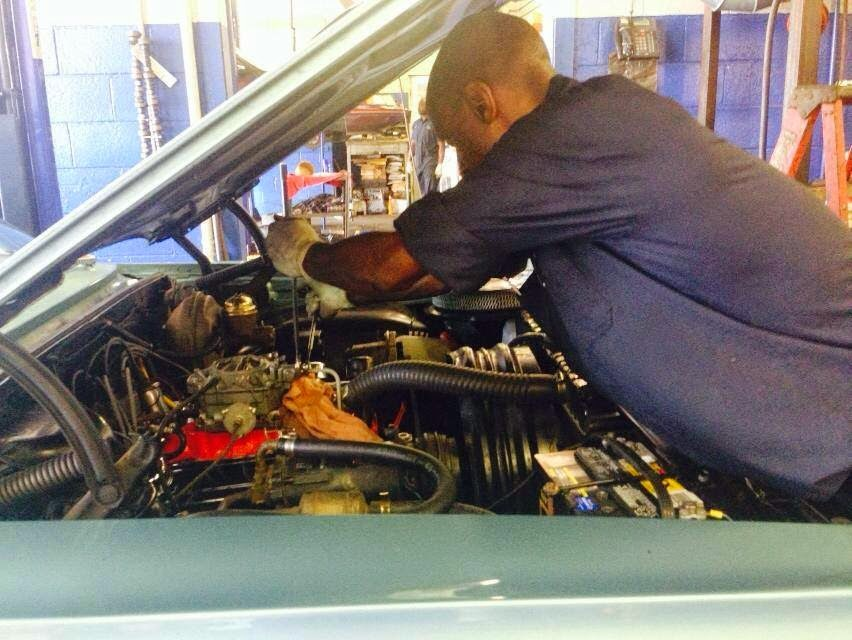
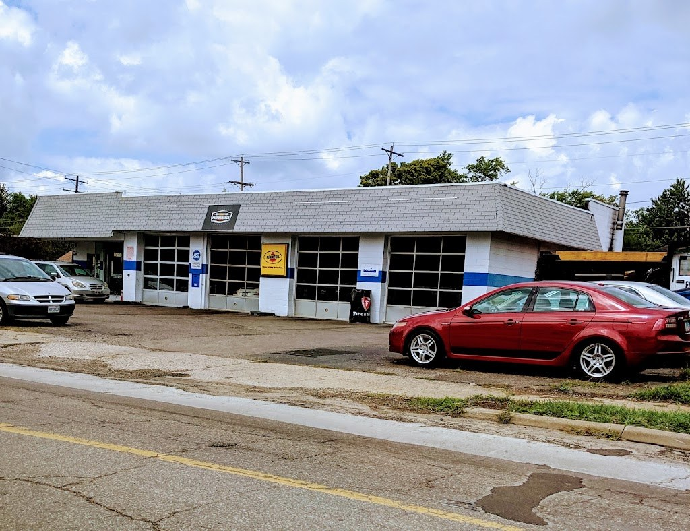
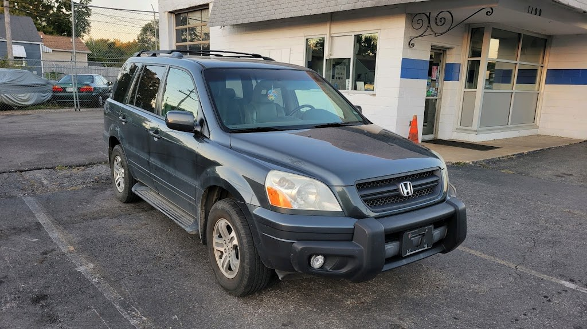

Auto Repair, Columbus OH
Weber Road Auto Service
Full-service auto repair in Columbus since 2002, with ASE-certified technicians, for foreign and domestic cars, luxury brands, and classics.
Owner Eric Easley. ASE-certified technicians.

Auto repair services
Routine maintenance
State inspections
Brakes
Tires
Major repairs
Foreign and domestic
Foreign and domestic cars.
Luxury brands
A specialty in luxury brands.
Classic cars
A specialty in classic cars.
ASE-certified technicians
ASE-certified technicians.
About
Weber Road Auto Service is a full-service auto repair shop in Columbus, Ohio, at 1100 East Weber Road, in business since 2002 and owned by Eric Easley. The shop handles routine maintenance, state inspections, brakes, tires, and major repairs, for foreign and domestic cars, with a specialty in luxury brands and classic cars. The technicians are ASE-certified. Hours are Monday to Friday 8:00 AM to 5:00 PM and Saturday 8:00 AM to 4:00 PM. Call (614) 263-3805 to book service.
Since 2002
Weber Road Auto Service has been in business since 2002, owned by Eric Easley. Find the shop on Facebook.
Gallery


All three photos are the shop's own public photos from its Google Maps listing. They show a mechanic at work on an engine, the garage building, and a car in front of the shop.
Visit
Address: 1100 E Weber Rd, Columbus, OH 43211
Hours: Monday to Friday 8:00 AM to 5:00 PM. Saturday 8:00 AM to 4:00 PM. Sunday closed.
Phone: (614) 263-3805
Contact
Weber Road Auto Service serves Columbus, OH. Questions? Call (614) 263-3805.